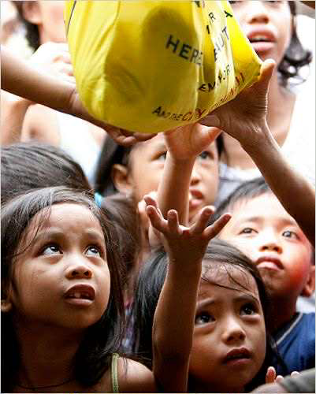
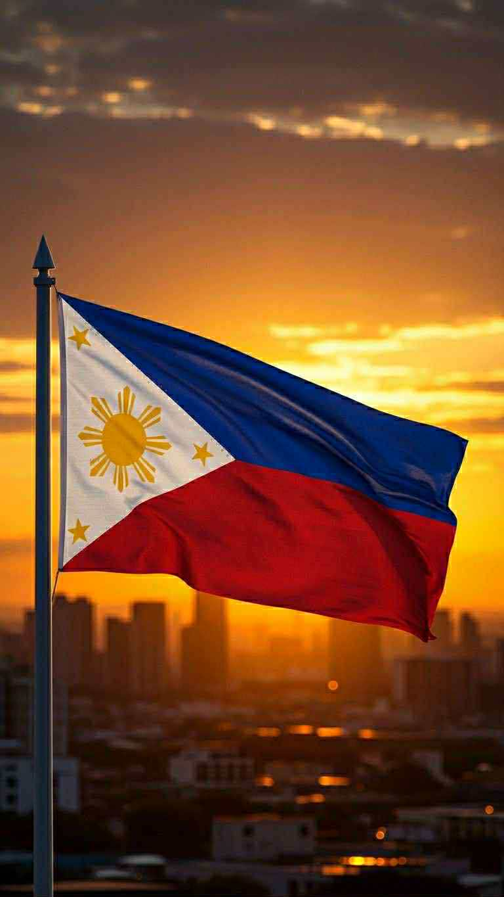
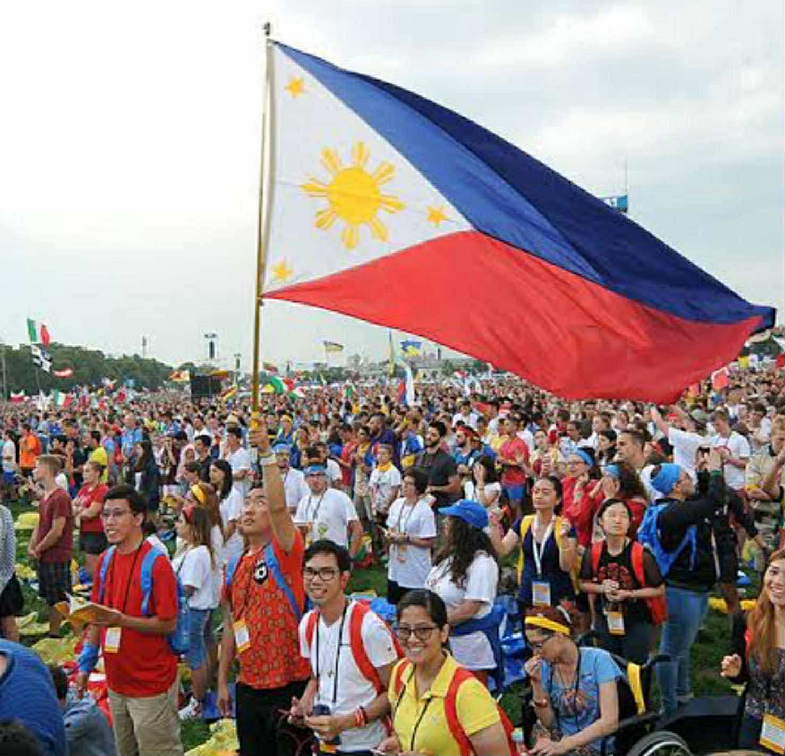

According to a new Social Weather Stations’ (SWS) Survey, 15.5 million of Filipino Families considered themselves poor as of April 2025 with 70% of it coming from Mindanao. In a global perspective, 8.5% of the global population lives in extreme poverty while around 44% of the global population remain poor. Although the number of individuals who live in poverty has greatly decreased since the pandemic time, we can’t ignore that there are still billions of people all over the world who experience this.
| Region | Percentage |
|---|---|
| Mindanao | 69% |
| Visayas | 60% |
| Luzon | 38% |
These statistics are enough to show us that billions of people struggle to provide basic necessities for their families such as food, water, shelter, and more. Poverty is the root cause why people are starved, children are forced to labor, and countries lack advancements in the economy. Poverty is something that we should not take lightly and could be dangerous to the lives of people if not addressed. You may have heard the word “poverty” multiple times already but sometimes we do not recognize the severity of it. These statistics are more than just numbers; they are the lives of people who struggle to make ends meet.
According to the Philippine Statistics Authority, the poverty incidence among the Filipino population was reduced from 18.1% in 2021 to 15.5% 2023. This means that 2.45 million Filipinos are relieved from poverty. This decrease surpassed the target of the government for poverty incidence in 2023. There is also a program called The Pantawid Pamilyang Pilipino Program (4Ps) which is a conditional cash program and initiative to provide better education, healthcare, and job opportunities.
Although there was a huge improvement from during the pandemic time, up until this present day there are still a big number of the population who lives in poverty. Bringing the numbers down is not easy and we are being challenged by high income inequality and employment barriers. If we overcome these challenges the Philippines will be able to achieve its goal that by 2040, this country will become a middle class society where no one lives in poverty.
 As a scholar, we are given free quality education out from the money of the public. With this, we should be able to give back to the nation. The scholars of the country should be able to help and solve the problems that are present in our country. We should be the voices of those who can't speak up and should be well-educated enough to help solve these issues. We are given the privilege of education and it's high time that we use it for the betterment of our country. Where issues are present such as poverty, we should be the ones leading our country even if its by small actions like raising awareness.
Should we just let these problems continue and become detrimental to the lives of the people, or should we take action to help solve them? Poverty is most often talked about in this country but few or limited are those who take actions. It is not enough that we just talk about these problems but we should also have solutions to solve them. Though it’s hard, if we have the willingness to help these people we should be able to overcome challenges. The people are waiting for someone to step up and be the ones who take the initiative. In order to have an inclusive society, let us ensure that no one gets left behind.